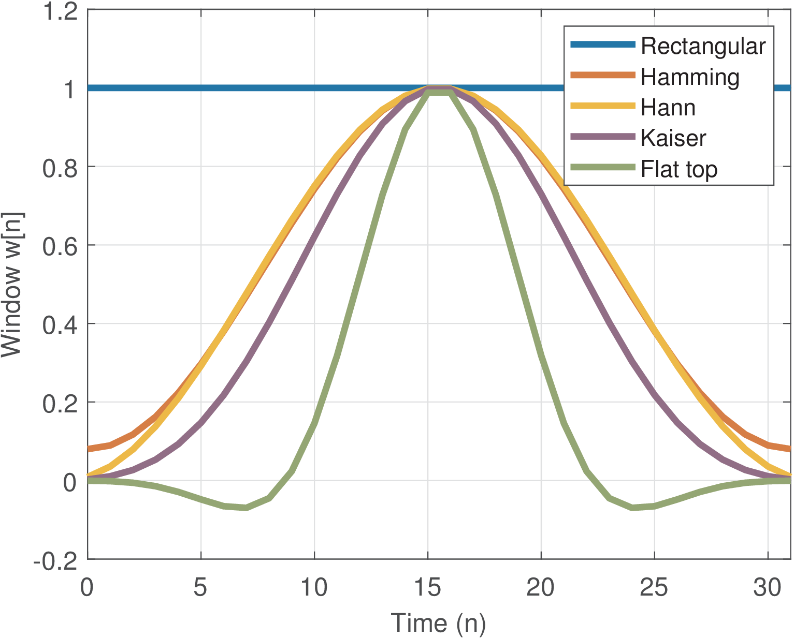
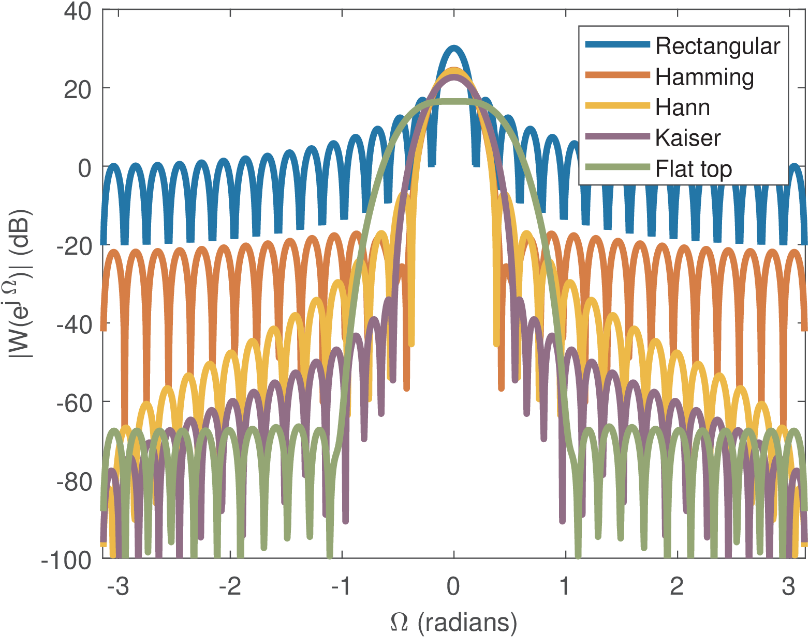
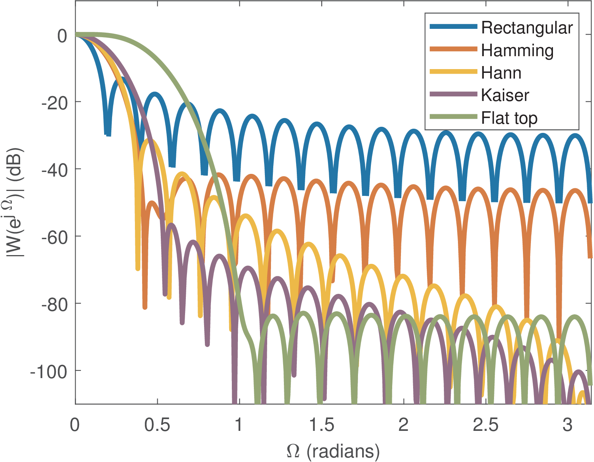
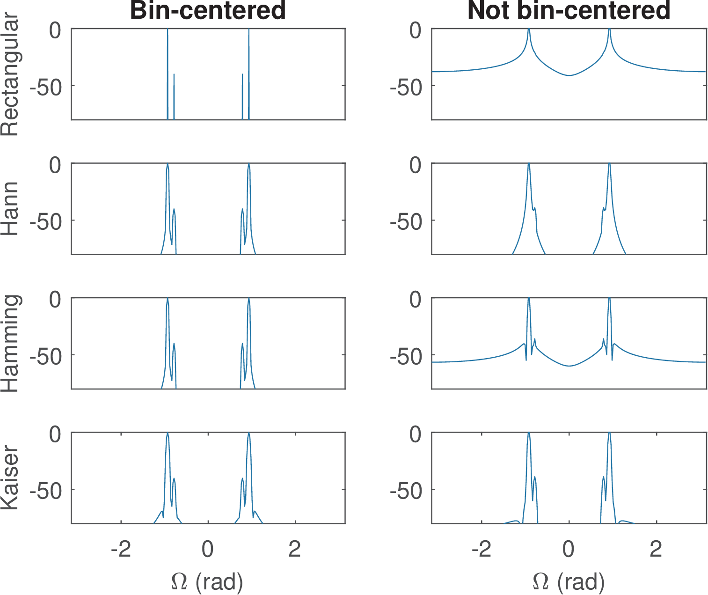
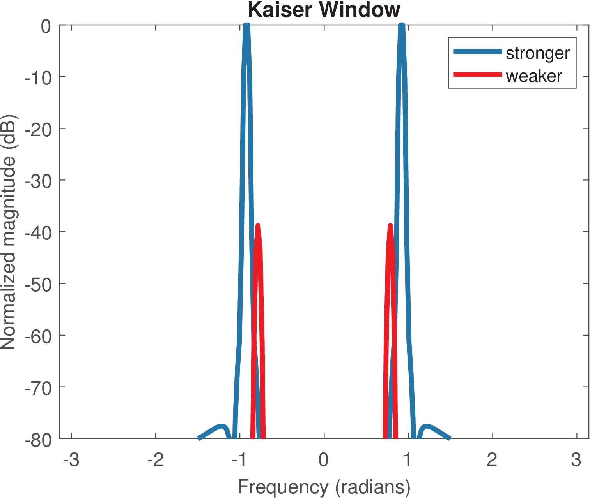

4.3 Windows for spectral analysis
Windows were briefly discussed in the context of FIR design in Section 3.13.5. Here they are applied in spectral analysis to better control trade offs such as resolution and leakage.
Windows are essential to model the extraction of a finite-duration segment of a signal with a potentially infinite duration. For example, an FFT is restricted to operate on signal samples and even if the user is not aware or explicitly modeling the windowing operation, obtaining a segment of samples from a longer signal is equivalent to multiplying by a rectangular window of duration samples.
Windowing in time domain is often performed by
|
|
(4.1) |
as a pre-processing step. Then, for example, the FFT of the windowed signal is calculated (the FFT of the original signal would be unfeasible due to its long duration).
As informed by Eq. (3.12), this multiplication in time-domain corresponds to a periodic convolution in frequency-domain between their respective spectra and .
Reduced resolution and leakage are the two primary effects on the spectrum as a result of applying a window to the signal. The resolution of the overall spectral analysis
is primarily influenced by the width of the main-lobe of the window, which is inversely proportional to the window (and consequently signal) duration. The degree of leakage depends on aspects of the window DTFT such as the relative amplitude of the main-lobe with respect to the amplitudes of the sidelobes. An FFT-based spectral analysis resolution also depends on the FFT resolution given by Eq. (2.32). Given a windowed signal with duration of samples, the FFT resolution can always be increased via zero-padding. Using a FFT size larger than decreases , but cannot recover the leakage that occurred due to windowing.The convolution in Eq. (3.12) may not significantly alter with respect to the original in case is relatively narrow compared to variations in . However, because the tradeoff between narrower bandwidths and longer duration over time (see the Fourier transform of a square pulse in Eq. (B.54), for example), this condition requires the window to be sufficiently long (i. e., must be sufficiently large). In the extreme (and ideal) situation of windowing not altering the original , the window DTFT would be . But this is equivalent to having with infinite duration and, obviously, not performing windowing at all.
4.3.1 Popular windows
Five of the most popular windows are described here.


Figure 4.1 shows some common windows for samples in time-domain. Note that the maximum amplitude is equal to one. Figure 4.2 shows these windows in frequency-domain via their DTFTs.
Example 4.1. Designing windows in Matlab/Octave. Listing 4.1 lists the commands to design windows with samples using Matlab/Octave.
N=256; %desired number of samples of window W W=rectwin(N); %Rectangular window W=hamming(N); %Hamming window W=hanning(N); %Hann window 5W=kaiser(N,7.85); %Kaiser with beta=7.85 W=flattopwin(N); %Flat top window
Assuming discrete-time windows, the only input parameter for their design is their duration. The Kaiser windows (also called Kaiser-Bessel window) is the only exception among the five, because it also has a parameter . For example, increasing of a Kaiser window widens the main lobe and decreases the amplitude of the sidelobes.

It is common to normalize a window such that its DTFT has a value equal to one at DC. This was done to generate Figure 4.3. The normalization can use the fact that the DC value coincides with the sum of the window coefficients. For example, a normalized Hamming window can be obtained with w=hamming(32);w=w/sum(w).
Example 4.2. Equations describing popular windows. The Hamming window adopted here is given by
|
|
(4.2) |
|
|
(4.3) |
Note that according to Eq. (4.3), the first and last samples ( and ) are zero and this version of the Hann window is called “periodic”. In Python, the commands import numpy and w = numpy.hanning(5) return [0.,0.5,1.,0.5,0.]. In Matlab/Octave, the command hanning(6,’periodic’) returns [0;0.25;0.75;1.00;0.75;0.25] while the commands hanning(5) and hanning(5,’symmetric’) return [0.25;0.75;1.00;0.75;0.25], without the zero-valued samples.
The Kaiser windows for odd, such that is an integer, is
|
|
(4.5) |
where is the order Bessel function of the first kind, which is calculated in Matlab/Octave with besseli(0,x), as indicated in the following commands:
N=13; beta=7.85; %produce same window as w=kaiser(N,beta): n=0:N-1; M=(N-1)/2; %auxiliary variables w=abs(besseli(0,beta*sqrt(1-((n-M)/M).^2)))/abs(besseli(0,beta)); w=w/max(w); %normalize to have maximum value equal to 1
that create a Kaiser window (for odd).
4.3.2 Leakage
Leakage is a very important aspect on spectral analysis using FFT. To understand leakage one must remember that the multiplication in time-domain, between the signal and a window , corresponds to the convolution in frequency-domain between their respective spectra and .
The spectra of the windows in Figure 4.2 indicate that the values of the original spectrum will be surely altered if is convolved with any window. This happens because the spectrum of a finite-duration window can be very distinct from the ideal impulse in frequency domain.
To make this point clear, consider that is the DTFT of a cosine of amplitude and frequency , such that the impulses of area are located at . Assuming the window DTFT has value at (DC), according to Eq. (3.12), the windowing operation will lead to a convolution result with shifted versions of centered at with a peak value of .
The result of the convolution caused by windowing may not significantly impact the original spectrum in case is relatively narrow compared to variations in . But this condition implies that the window is sufficiently long (i. e., must be sufficiently large). As mentioned, the ideal situation, where windowing would not alter the original , is to have as an impulse in the range (i. e. ), but this implies that has infinite duration and all samples of are available.
Hence, even if is
narrow compared to , the convolution may have non-zero (“leaked”) values in frequencies where the original signal was zero.Note that many times, leakage is erroneously associated to using FFTs to perform spectral analysis. Even when dealing with DTFTs, without the inherent discretization of frequency provoked by FFTs, windowing the spectrum creates “frequency leaks” that show up on the DTFT . Hence, leakage is associated to the DTFTs and should not be confused with the picket-fence effect caused by sampling the DTFT via a FFT, as discussed in the sequel.
4.3.3 Picket-fence effect
Conceptually, the result of taking the FFT of a signal segment is the consequence of two steps: a) obtaining , a version of with leakage due to windowing, and then b) discretizing according to the frequency grid imposed by the FFT.
The consequence of discretizing via an FFT is sometimes called picket-fence effect, which corresponds to observing the DTFT of the signal under analysis just at multiples of from Eq. (2.32). These effects appear in a combined way in FFT-based spectral analysis, such as in Application 2.11.
It is useful to distinguish the two concepts: spectral leakage due to windowing and the picket-fence due to discretization of according to FFT frequency grid.
4.3.4 Figures of merit applied to windows
Four of the most important parameters of a window are:
-
width of its main lobe,
</li> <li class='itemize'>amplitude of its sidelobes, </li> <li class='itemize'>rate of sidelobe decay as frequency increases, </li> <li class='itemize'>and scallopping loss.</li></ul>Each of them are discussed in the sequel. There are other figures of merit of windows, and the reader is invited to check the references about windows in Section 4.11.
Example 4.3. Evaluating windows using Matlab’s wintool. Matlab’s wintool (Window Design & Analysis Tool) GUI is useful to explore trade offs in windowing. One can observe, for example, that increasing of a Kaiser window widens the main lobe and decreases the amplitude of the sidelobes. It also calculates the leakage factor, relative sidelobe attenuation and main lobe width.
Windows differ in their main-lobe width, which is typically inversely proportional to , the length of the window. Thus, it is possible to achieve a better resolution in frequency by increasing , but more signal samples are needed and sometimes they are not available.
Another important window parameter is the highest sidelobe level, which should have a small value. When a window is used for FIR design, the smaller the sidelobe amplitude with respect to the amplitude of the main lobe, the higher the filter attenuation in the stopband. From the spectra in Figure 4.3, Table 4.1 can be obtained, which indicates the difference in dB between the main lobe and the highest sidelobe amplitudes. It should be noticed that, for the Hamming window, the highest sidelobe is the third one. The first sidelobe is localized in the frequency equal to 0.46 rad and has a level of dB when compared to the main-lobe level.
Table 4.1: Difference in dB between the window main lobe and highest sidelobe amplitudes. Window Rectangular Hann Hamming Kaiser () Flat top Difference (dB) </div>When comparing spectral components that are close to each other, the adopted windows must have good resolution and a low highest sidelobe level. When the spectral components are far apart, having a large sidelobe decay can be more important.
This sidelobe fall-off indicates how the peak amplitude of the sidelobes decay with frequency and, for example, is a motivation for using the Hann window. The side-lobe fall-off is dependent on the continuity of the window in time-domain and its derivatives. For example, the Hann window is continuous, and besides, its first derivative is continuous too. Thus, its transform falls off at or, equivalently, at dB per octave. In contrast, the rectangular and Hamming windows, which are not continuous at their endpoints, have a dB per octave fall-off.
When using FFT to estimate the amplitude or power of a sinusoid, the combined effect of picket-fence and leakage creates a variation on the estimated sinusoid amplitude called “scalloping”. For most windows, the so-called scalloping loss is worst when the frequency is half-way the two neighboring bins. Listing 4.2 allows to observe the scalloping loss when using the rectangular window for obtaining the FFT of a cosine.1
Example 4.4. When a DTFT has impulses, does this create a problem for an FFT-based analysis?. A DTFT can have impulses such as, for example, the DTFT of a sinusoid. One question that may arise then is: -If the FFT simply performs sampling of the DTFT, what is the FFT value when exactly sampling an impulse? Should this value go to infinite? The answer requires noting that the impulse in the DTFT appears because is an infinite-long signal (e. g., an eternal sinusoid). But an FFT has to be applied to a signal with a finite number of samples. Therefore, the FFT is always applied to a windowed signal , with a DTFT that does not have impulses.
4.3.5 Alternative representation of discrete-time sinusoids
Given that the bin width of an -points DFT (or FFT) is radians, the angular frequency associated to the FFT bin is
radians, as given by Eq. (2.35).When performing the spectral analysis of a sinusoid using an -points FFT, the components of “positive” and “negative” frequencies of will be mapped to the FFT bins and , respectively. Therefore, it is useful to generalize the signal expression to , where is a real number that allows to obtain any desired value for the angular frequency .
To check the periodicity of , one can use Eq. (1.39) and write
(4.6) which is a ratio of two integers when is a rational number (). For instance, assume the signal of interest is , with and , where is the adopted FFT size. In this special case, in which , the fundamental period is samples, given that simplifying the fraction leads to , and this cosine is represented by the FFT bins and .
As another example, consider the signal and an FFT
size . In this case, and , but and can be written as a ratio of two integers and . The signal has a period of samples but only of its samples are being analyzed via the FFT. In this case, the FFT does not “see” a pure sinusoid. The component of corresponding to the positive frequency will reside between the bins and , while the negative-frequency component will be located between bins and 225. Leakage will occur for both components and will be more visible in their neighbor bins.4.3.6 Example of combined effects of leakage and picket-fence
It is informative to revisit the result of an FFT when the original input signal is a discrete-time sinusoid after windowing. Note that the eternal cosine DTFT is within the range , then repeated in multiples of .
Assuming that denotes the DTFT of the windowed cosine, the final FFT result depends on the two effects:
- f 1.
-
Leakage: is the periodic convolution between and the window DTFT . Assuming a rectangular window with non-zero amplitudes from , its spectrum is
(4.7) <!-- l. 338 --><p class='noindent'>Recalling that the periodic convolution of Eq. (<a href='ak_dsp_bookse34.html#x43-127007r12'>3.12<!-- tex4ht:ref: eq:windowingConvolution --></a>) has a factor <!-- l. 338 --><math display='inline' xmlns='http://www.w3.org/1998/Math/MathML'><mrow> <mfrac><mrow><mn>1</mn></mrow>2 π (4.8) </dd><dt class='enumerate-enumitem'><span class='ec-lmbx-10x-x-109'>f</span>-
- Picket-fence: The FFT has a resolution of and corresponds to samples of the DTFT at frequencies .
-
The FFT values for the windowed cosine , with and , is obtained substituting Eq. (4.7) in Eq. (4.8):
(4.9) From Eq. (4.7), for rad, the value of can be found using L’Hospital’s rule, which leads to . In the special case of , the signal has a constant amplitude, its DTFT is and the FFT DC bin . Recall from Eq. (2.44), that one needs to normalize the DFT by in order to associate the DFT coefficients to the amplitude in Volts of the signal components in time-domain. In this case, the normalized DC value is . Similarly, when , the two DTFT peaks at have amplitude . Normalizing the peak values by , leads to an amplitude of for each.
Two cases of interest are and , where , which correspond to centered on a bin and exactly in the middle of two bins, respectively.
Listing 4.2 compares the magnitudes of the DTFT and -points DFT for a signal , with and . This windowed cosine is not bin-centered and the leakage is visible through the “picket-fence” corresponding to the DFT bins. The cosine has an angular frequency rad and the closest FFT bin is . In this case, the DFT magnitude at would lead to an estimated
frequency rad. The DTFT magnitude peak at rad is , such that the scalloping loss is .Listing 4.2: MatlabOctaveCodeSnippets/snip_frequency_fftCosineExample.m function snip_frequency_fftCosineExample() clf, N=32; A=6; %clear figure, FFT length, cosine amplitude M=1000; %number of sample points imposing the DTFT resolution alpha=8.3; %specifies the cosine frequency 5Wc=(alpha*2*pi)/N; %cosine frequency in radians W=linspace(0,2*pi,M); %frequency range Xw=zeros(1,M); %DTFT values for i=1:M %loop over frequencies and calculate DTFT values Xw(i) = (A/2)*(rect_dtft(W(i)+Wc, N)+rect_dtft(W(i)-Wc, N)); 10end n=0:N-1; x=A*cos(Wc*n); %generate N samples of the cosine Xfft = fft(x); %calculate FFT with N points disp(['Max(abs(FFT))=' num2str(max(abs(Xfft)))]) disp(['Scalloping loss in DTFT=' num2str(A*N/2-max(abs(Xfft)))]) 15plot(W/pi,abs(Xw)),hold on, stem([0:N-1]*(2*pi/N)/pi,abs(Xfft),'or') xlabel('Frequency \Omega (rad) normalized by \pi)') ylabel('Magnitude'), legend('DTFT','DFT'),grid end function dtft_value = rect_dtft(Omega, N) %DTFT of rectangular window 20 if Omega == 0 dtft_value = N; %L'Hospital rule to correct NaN if 0/0 else W_div_2 = Omega/2; %speed up things computing only once dtft_value=(sin(N*W_div_2)/sin(W_div_2))*exp(-1j*W_div_2*(N-1)); 25 end end
If one varies in Listing 4.2 to and , the maximum DFT amplitudes at are and 61.51, respectively. Therefore, the corresponding scalloping losses are 0 (the minimum possible value) and . Observe that when estimating the cosine amplitude, one would divide the FFT peak amplitude by . For , this normalization would lead to an estimate of Volts instead of the correct value of V. This indicates how deleterious the combination of leakage and picket-fence can be.
4.3.7 Example of using windows in spectral analysis
To illustrate the importance of windows, two distinct signals, and , each composed by a stronger and a weaker sinusoids, will have their spectra estimated using a FFT with points:
<ul class='itemize1'> <li class='itemize'> <!-- l. 389 --><p class='noindent'>Case 1: the stronger sinusoid is bin-centered - The first sequence is </p><table class='equation-star'><tr><td> <!-- l. 390 --><math class='equation' display='block' xmlns='http://www.w3.org/1998/Math/MathML'><mrow> <msub><mrow><mi>x</mi></mrow><mrow><mn>1</mn></mrow></msub><mo class='MathClass-open' stretchy='false'>[</mo><mi>n</mi><mo class='MathClass-close' stretchy='false'>]</mo> <mo class='MathClass-rel' stretchy='false'>=</mo> <mn>1</mn><mtext class='qopname'>cos</mtext><mo> <!-- FUNCTION APPLICATION --> </mo><!-- nolimits --><mo class='MathClass-open' stretchy='false'>(</mo><mo class='MathClass-open' stretchy='false'>(</mo><mn>64</mn><mi>π</mi><mo class='MathClass-bin' stretchy='false'>∕</mo><mn>256</mn><mo class='MathClass-close' stretchy='false'>)</mo><mi>n</mi> <mo class='MathClass-bin' stretchy='false'>+</mo> <mi>π</mi><mo class='MathClass-bin' stretchy='false'>∕</mo><mn>3</mn><mo class='MathClass-close' stretchy='false'>)</mo> <mo class='MathClass-bin' stretchy='false'>+</mo> <mn>100</mn><mtext class='qopname'>cos</mtext><mo> <!-- FUNCTION APPLICATION --> </mo><!-- nolimits --><mo class='MathClass-open' stretchy='false'>(</mo><mo class='MathClass-open' stretchy='false'>(</mo><mn>76</mn><mi>π</mi><mo class='MathClass-bin' stretchy='false'>∕</mo><mn>256</mn><mo class='MathClass-close' stretchy='false'>)</mo><mi>n</mi> <mo class='MathClass-bin' stretchy='false'>+</mo> <mi>π</mi><mo class='MathClass-bin' stretchy='false'>∕</mo><mn>4</mn><mo class='MathClass-close' stretchy='false'>)</mo><mo class='MathClass-punc' stretchy='false'>.</mo><!-- l. 394 --><p class='noindent'>The idea is that the weaker cosine (of amplitude 1 V) is located in the center of the FFT bin <!-- l. 394 --><math display='inline' xmlns='http://www.w3.org/1998/Math/MathML'><mrow><mi>k</mi> <mo class='MathClass-rel' stretchy='false'>=</mo> <mn>32</mn></mrow></math>, and the stronger is located in the center of bin 38. Having a bin-centered sinusoid corresponds to choosing the FFT length coinciding with a multiple of the sinusoid period. </p></li> <li class='itemize'> <!-- l. 396 --><p class='noindent'>Case 2: the stronger sinusoid is not bin-centered - The second sequence is </p><table class='equation-star'><tr><td> <!-- l. 397 --><math class='equation' display='block' xmlns='http://www.w3.org/1998/Math/MathML'><mrow> <msub><mrow><mi>x</mi></mrow><mrow><mn>2</mn></mrow></msub><mo class='MathClass-open' stretchy='false'>[</mo><mi>n</mi><mo class='MathClass-close' stretchy='false'>]</mo> <mo class='MathClass-rel' stretchy='false'>=</mo> <mn>1</mn><mtext class='qopname'>cos</mtext><mo> <!-- FUNCTION APPLICATION --> </mo><!-- nolimits --><mo class='MathClass-open' stretchy='false'>(</mo><mo class='MathClass-open' stretchy='false'>(</mo><mn>64</mn><mi>π</mi><mo class='MathClass-bin' stretchy='false'>∕</mo><mn>256</mn><mo class='MathClass-close' stretchy='false'>)</mo><mi>n</mi> <mo class='MathClass-bin' stretchy='false'>+</mo> <mi>π</mi><mo class='MathClass-bin' stretchy='false'>∕</mo><mn>3</mn><mo class='MathClass-close' stretchy='false'>)</mo> <mo class='MathClass-bin' stretchy='false'>+</mo> <mn>100</mn><mtext class='qopname'>cos</mtext><mo> <!-- FUNCTION APPLICATION --> </mo><!-- nolimits --><mo class='MathClass-open' stretchy='false'>(</mo><mo class='MathClass-open' stretchy='false'>(</mo><mn>75</mn><mi>π</mi><mo class='MathClass-bin' stretchy='false'>∕</mo><mn>256</mn><mo class='MathClass-close' stretchy='false'>)</mo><mi>n</mi> <mo class='MathClass-bin' stretchy='false'>+</mo> <mi>π</mi><mo class='MathClass-bin' stretchy='false'>∕</mo><mn>4</mn><mo class='MathClass-close' stretchy='false'>)</mo><mo class='MathClass-punc' stretchy='false'>.</mo><!-- l. 401 --><p class='noindent'>In this case, the weaker cosine is located in the center of bin 32 but the stronger is located in the border of bins 37 and 38.</p></li></ul>In this example the goal is to distinguish the sinusoids and estimate their frequencies. As in many applications of spectral analysis, the amplitudes are irrelevant and what is taken into account is the relative difference between the signal components in frequency domain. For both and , the difference in power between the sinusoids is dB. These sequences can be generated as in Listing 4.3.
Listing 4.3: MatlabOctaveCodeSnippets/snip_frequency_sequence_generation.m N=256; %number of samples available of x1 and x2 n=0:N-1; %abscissa kweak=32; %FFT bin where the weak cosine is located kstrong1=38; %FFT bin for strong cosine in x1 5weakSigal = 1*cos((2*pi*kweak/N)*n+pi/3); %common parcel x1=100*cos((2*pi*kstrong1/N)*n+pi/4) + weakSigal; %x1[n] kstrong2=37.5; %location for strong cosine in x2 x2=100*cos((2*pi*kstrong2/N)*n+pi/4) + weakSigal; %x2[n]

Figure 4.4: Comparison of spectra obtained with four windows in case both sinusoids are bin-centered (left plots) and not (right plots). The commands that design the windows to pre-multiply x1 and x2 in Listing 4.3, before calling the FFT, are given in Listing 4.1.
The results with four windows from Listing 4.1 are shown in Figure 4.4. The flat top window was not used due to its poor frequency resolution. For example, the spectrum in Figure 4.4 for (called x2 in the code) using Hamming was obtained with Listing 4.4.
Listing 4.4: MatlabOctaveCodeSnippets/snip_frequency_analysis.m N=256; n=0:N-1; %N is the number of available samples and FFT length x2=100*cos((2*pi*37.5/N)*n+pi/4) + cos((2*pi*32/N)*n+pi/3); %cosines dw=(2*pi)/N; %DFT spacing in radians w=-pi:dw:pi-dw; %abscissa for plots matched to fftshift 5x=x2.*hamming(N)'; %perform windowing factor=max(abs(fft(x))); %normalization to have stronger at 0 dB plot(w,fftshift(20*log10(abs(fft(x)/factor))));
The graphs at the left column in Figure 4.4 correspond to estimated spectra of (both sinusoids are bin-centered). For , it can be seen that the best result was obtained by a rectangular window while the other windows led to spectra with leakage (spurious power) near the cosines. Based solely on the results obtained for case 1, one could erroneously concluded that the rectangular window is always the best. However, as shown in the top-right graph, when the strong cosine is not bin-centered, the rectangular window miserably fails to detect the weaker cosine.
In Figure 4.4, the Hann window allows a marginal detection of the weaker cosine, while the Hamming window allows the detection of both cosines but contaminates the whole spectrum with spurious power along frequency just 50 dB below the power level of the strongest sinusoid. This is a consequence of the reduced side-lobe fall-off for the Hamming window, as indicated in Figure 4.3. The Kaiser window achieves the best result when one takes in account both cases (bin-centered and not).

Figure 4.5: Individual spectra of the two sinusoids superimposed obtained using the Kaiser window. 
Figure 4.6: Individual spectra of the two sinusoids superimposed, obtained using the rectangular window. To complement the analysis of estimating the spectrum of (the stronger sinusoid is not bin centered), Figure 4.5 and Figure 4.6 show the individual spectra of the two sinusoids superimposed, obtained using the Kaiser and rectangular windows, respectively. Note that, Figure 4.4 shows exactly the combined effect of these individual spectra. Figure 4.6 clearly shows that the significant leakage of the stronger cosine caused by the rectangular window, completely “masks” the weaker cosine.
Note that this was a specific application. For example, features such as side-lobe fall-off are important in other situations. A very general conclusion is to always use a window other than the rectangular when performing spectral analysis of a signal that is not guaranteed to have all components bin-centered.
4.3.8 Estimating sinusoid amplitude and correction of scalloping loss
In some applications of FFT-based spectral analysis it is necessary not only detect the frequencies but also the amplitudes of the signal frequency components. In this case, the impact of windowing needs to be taken in account, by scaling the FFT of the windowed signal.
For instance, if one is calculating the harmonic distortion solely based on percentage values, such as: “- the third harmonic has 12% of the amplitude of the fundamental frequency component”, then mitigating the scalloping loss may not be needed. But if the analysis requires the absolute amplitude values of the harmonic components, the procedure to be discussed in the next paragraphs become important.
For convenience, we assume a complex exponential , where is the amplitude, is the FFT-size and is the FFT bin in which resides. Note that is bin-centered. The windowed signal is obtained by multiplying by a window with support of samples. Due to the orthogonality of the FFT basis functions, all FFT coefficients will be zero but the one corresponding to bin . This coefficient is given by:
Therefore, to obtain an estimate of the correct amplitude from an FFT value , one should use
(4.10) Note that one divides the FFT result by when wants to interpret it in Volts, but this is already incorporated in Eq. (4.10). If the division by is already incorporated in a given software routine, one needs to multiply the FFT by in order to compensate the later division by .
Listing 4.5 illustrates the procedure for estimating the amplitude V of a cosine. When using the rectangular window for a frequency located half-way two neighboring bins (alpha=8.5), the result is:
Max(abs(scaled FFT))=1.9221 Scalloping loss = 1.0779 Correct amplitude (Volts) = 6 Estimated amplitude (Volts) = 3.8442 Amplitude error (Volts) = 2.1558 Amplitude error (%) = 35.9301
The amplitude error in this case is 35.9%, which is due to the worst-case scalloping loss for the rectangular window in this situation of a sinusoid exactly half-way the bins.2
Listing 4.5: MatlabOctaveCodeSnippets/snip_frequency_scalloping.m window_choice = 1; %choose one among 3 possible windows clf, N=32; A=6; %clear figure, FFT length, cosine amplitude alpha=8.5; %specifies the cosine frequency Wc=(alpha*2*pi)/N; %cosine frequency in radians 5n=0:N-1; x=A*cos(Wc*n); %generate N samples of the cosine switch (window_choice) case 1 this_window = rectwin(N); case 2 10 this_window = hanning(N); case 3 this_window = flattopwin(N); end amplitude_scaling = sum(this_window); %factor to mitigate scalloping 15xw = x.* transpose(this_window); %multiply in time-domain Xw_scaled_fft = fft(xw)/amplitude_scaling; %N-points FFT and scale it max_fft_amplitude = max(abs(Xw_scaled_fft)); disp(['Max(abs(scaled FFT))=' num2str(max_fft_amplitude )]) scalloping_loss=(A/2)-max_fft_amplitude; 20disp(['Scalloping loss = ' num2str(scalloping_loss)]) disp(['Correct amplitude (Volts) = ' num2str(A)]) disp(['Estimated amplitude (Volts) = ' num2str(2*max_fft_amplitude)]) amplitude_error = A - 2*max_fft_amplitude; disp(['Amplitude error (Volts) = ' num2str(amplitude_error)]) 25disp(['Amplitude error (%) = ' num2str(100*amplitude_error/A)]) ak_impulseplot([A/2, A/2],[Wc,2*pi-Wc]/pi,[]); %plot cosine impulses hold on, stem([0:N-1]*(2*pi/N)/pi,abs(Xw_scaled_fft),'or') xlabel('Frequency \Omega (rad) normalized by \pi)') ylabel('FFT magnitude and impulse area scaled by \pi'), grid
In case one chooses the flat-top window in Listing 4.5 (window_choice=3), the results are:
Max(abs(scaled FFT))=2.9949 Scalloping loss = 0.0050728 Correct amplitude (Volts) = 6 Estimated amplitude (Volts) = 5.9899 Amplitude error (Volts) = 0.010146 Amplitude error (%) = 0.16909
The flat-top window does not have a good frequency resolution but reaches an amplitude estimation error of only 0.17%. Because of that, it is widely adopt to calibrate equipment.3 The Hann window is a trade-off between frequency resolution and amplitude error, reaching 14.24% of amplitude error when one uses window_choice=2.
After this short introduction to windowing, the next sections discuss three important functions in spectral analysis.
1 Scalloping loss is better understood by interpreting FFT as a filter-bank, as in Application 4.4.
2 Similar to the amplitudes, the absolute power values inferred from of an FFT-based analysis require correction [?].
3 See, e. g., the presentation by Matt Ettus at http://www.youtube.com/watch?v=wqKNUXDdIvU.